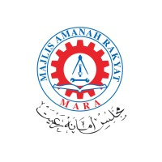

MASenior Lecturer
Majlis Amanah Rakyat (MARA) · TVETMARA Masjid Tanah
2008 – Present · Melaka, Malaysia
Teach diploma students in polymer composite processing and aerospace composite manufacturing. Develop teaching materials, assessment instruments, rubrics and competency-based workshop activities; deliver technical training in composite manufacturing, repair, tooling, mould fabrication and process coordination; support programme quality assurance, external verification and accreditation preparation.